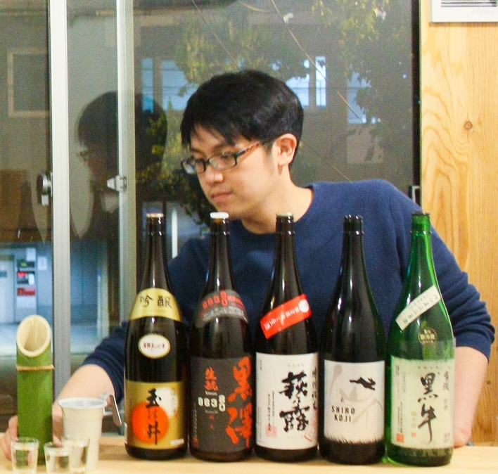

元蔵人 × 日本酒BAR店主
「何を頼めばいいか分からない」から、
好きな銘柄に出会うまで。
プロだからこそ伝えられる、全4回のお酒の本音。
水先案内人とは、本来、外海から来た船に乗り込み、入り組んだ港湾や狭い水路を安全に進むために指揮・誘導を行う専門家を指します。
専門用語やラベルの数字という「霧」に包まれた日本酒の世界において、 「日本酒の水先案内人」は、元蔵人であり現役の日本酒BAR店主だからこその視点で、その味わいや文化、背景を初心者の方にもわかりやすくお伝えします。
「何を飲めばいいかわからない」という迷いを、「自分で目利きし、本当に好きな一杯を選べる」楽しさへと変え、一人ひとりの「好き」を見つける手助けをいたします。

日本酒の水先案内人
1989年生まれ、平成元年生まれ。関西大学文学部比較宗教学専修卒。学生時代は落語研究会に所属。
SSI認定唎酒師を取得後、京都・伏見の「藤岡酒造（蒼空）」での蔵人見習い、兵庫・灘の「泉酒造（仙介）」にて蔵人として勤務。造り手の視点と苦労を肌で学ぶ。
2018年、大阪・中崎町に「日本酒片手にーポンカター」を開業。「日本酒×文化×エンターテインメント」を掲げ、現在は行政書士の資格も併せ持つ異色の「水先案内人」として活動中。
3月から6月まで、月ごとに知識の解像度を高めていきます。
同銘柄の「生」と「火入れ」の飲み比べ
日本酒度が同じでも「酸」で味が変わる瞬間の体感
冷酒と「お燗」で激変する山廃のポテンシャル体験
純米 vs アル添。先入観なしのブラインド試飲
オルタナティブスペース
所在地
〒530-0015 大阪市北区中崎西4-1-29
（ichimaruni本店の横）
アクセス
中崎町の情緒ある路地裏に位置する、ichimaruni本店に隣接したギャラリー＆イベントスペースです。
各回、定員になり次第締め切らせていただきます。（定員10名）
プロの「本音」を聞きながら、日本酒の本当の楽しみ方を見つけましょう。